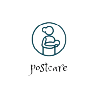
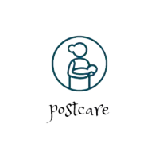

some helpful tricks and tips for the postpartum period
Prioritize self-care: Take care of yourself physically and emotionally. Get enough rest, eat nourishing meals, and make time for activities that help you relax and recharge.Start with gentle exercises: Begin with low-impact exercises such as walking or gentle stretching, gradually increasing intensity as your body heals. Listen to your body and don't push yourself too hard too soon.
Focus on core exercises: Engage in exercises that target the core muscles, such as pelvic floor exercises and gentle abdominal exercises, to rebuild strength and support overall posture.
Seek professional guidance: Consider consulting a postpartum exercise specialist or physical therapist who can provide personalized guidance and ensure you are exercising safely and effectively.
Involve your baby: Include your baby in your exercise routine by doing exercises together or using them as weights during strength training exercises. This promotes bonding and makes it easier to find time for workouts.
Stay hydrated: Drink plenty of water throughout the day, especially if you are breastfeeding, to support your body's healing and overall well-being.
Set realistic goals: Be patient with your postpartum fitness journey and set realistic expectations. Celebrate small victories and focus on gradual progress rather than comparing yourself to others.
Connect with other new mothers: Join postpartum support groups or online communities where you can share experiences, tips, and advice with other new mothers. Building a support network can be invaluable during this phase.
Take breaks when needed: Listen to your body and don't hesitate to take breaks or modify exercises if you feel any discomfort or pain. It's important to prioritize your recovery and well-being.
Practice self-compassion: Remember that each postpartum journey is unique, and it's normal to experience ups and downs. Be kind to yourself, embrace the changes your body has gone through, and celebrate the incredible work it has done in bringing new life into the world.
Gradually increase activity: Start with short exercise sessions and gradually increase the duration and intensity as your body becomes stronger. Listen to your body and don't push yourself too hard, too quickly.
Incorporate pelvic floor exercises: Strengthening your pelvic floor muscles is crucial for postpartum recovery. Perform exercises like Kegels regularly to help improve pelvic floor function and prevent issues like incontinence.
Practice good posture: Focus on maintaining good posture throughout the day, as it can help alleviate back pain and promote proper alignment. Avoid slouching and engage your core muscles to support your spine.
Include relaxation techniques: Incorporate relaxation techniques like deep breathing, meditation, or gentle yoga into your routine to reduce stress and promote overall well-being.
Wear comfortable clothing: Invest in comfortable, supportive clothing that accommodates your postpartum body. Opt for nursing-friendly activewear if you are breastfeeding.
Get creative with time management: Find creative ways to fit exercise into your daily routine, such as combining it with baby-related tasks or breaking it up into shorter sessions throughout the day.
Stay consistent: Consistency is key for progress. Aim for regular exercise sessions, even if they are shorter, rather than sporadic intense workouts. This will help build strength and stamina over time.
Modify exercises for your needs: Adjust exercises as needed to accommodate any physical limitations or discomfort. Consider modifications that are gentle on your joints and take into account any diastasis recti (separation of abdominal muscles) you may have.
Stay motivated with a support system: Enlist the support of your partner, friends, or family members to help you stay motivated and accountable. Having a workout buddy or participating in postpartum fitness classes can also provide a sense of community.
Celebrate non-physical victories: Remember that postpartum fitness is not just about physical changes. Celebrate non-physical victories like increased energy levels, improved mood, or reaching personal milestones, as these are important indicators of progress as well.
Incorporate pelvic floor exercises: Strengthening your pelvic floor muscles is crucial for postpartum recovery. Perform exercises like Kegels regularly to help improve pelvic floor function and prevent issues like incontinence.
Practice good posture: Focus on maintaining good posture throughout the day, as it can help alleviate back pain and promote proper alignment. Avoid slouching and engage your core muscles to support your spine.
Include relaxation techniques: Incorporate relaxation techniques like deep breathing, meditation, or gentle yoga into your routine to reduce stress and promote overall well-being.
Wear comfortable clothing: Invest in comfortable, supportive clothing that accommodates your postpartum body. Opt for nursing-friendly activewear if you are breastfeeding.
Get creative with time management: Find creative ways to fit exercise into your daily routine, such as combining it with baby-related tasks or breaking it up into shorter sessions throughout the day.
Stay consistent: Consistency is key for progress. Aim for regular exercise sessions, even if they are shorter, rather than sporadic intense workouts. This will help build strength and stamina over time.
Modify exercises for your needs: Adjust exercises as needed to accommodate any physical limitations or discomfort. Consider modifications that are gentle on your joints and take into account any diastasis recti (separation of abdominal muscles) you may have.
Stay motivated with a support system: Enlist the support of your partner, friends, or family members to help you stay motivated and accountable. Having a workout buddy or participating in postpartum fitness classes can also provide a sense of community.
Celebrate non-physical victories: Remember that postpartum fitness is not just about physical changes. Celebrate non-physical victories like increased energy levels, improved mood, or reaching personal milestones, as these are important indicators of progress as well.
 
